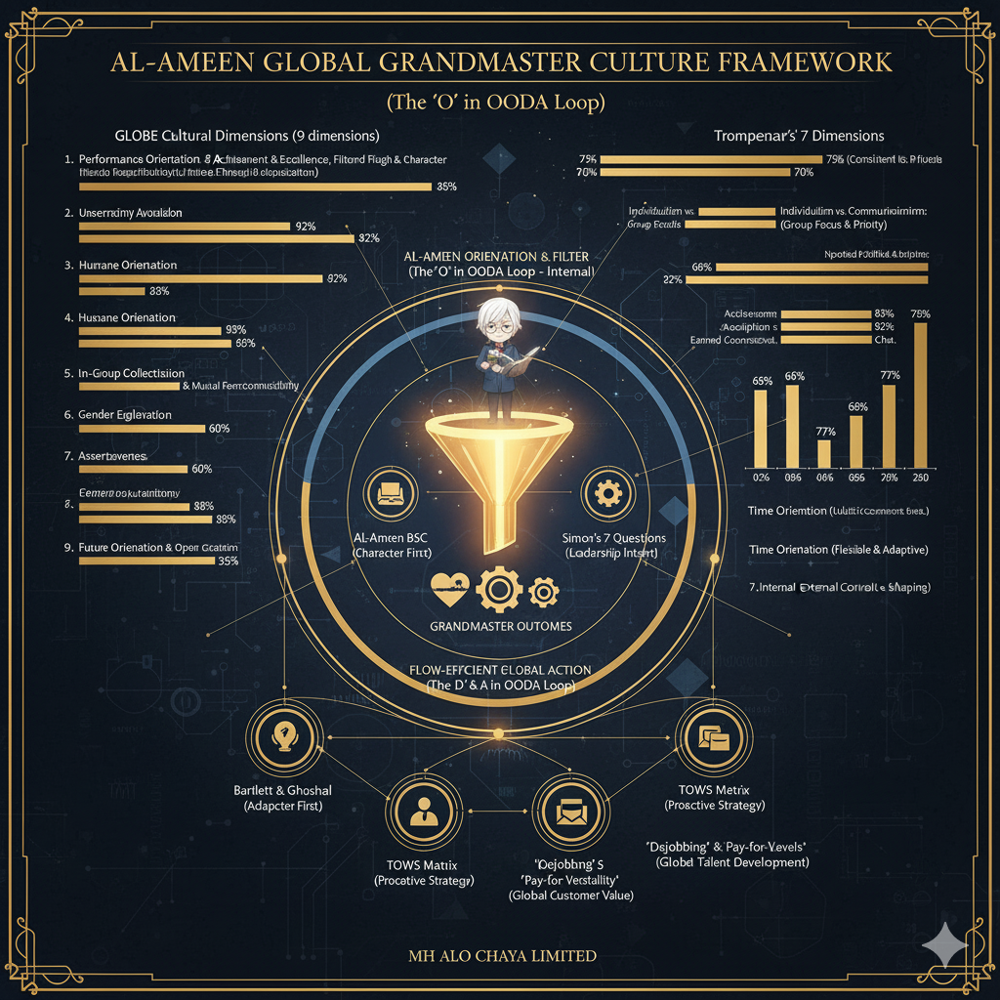
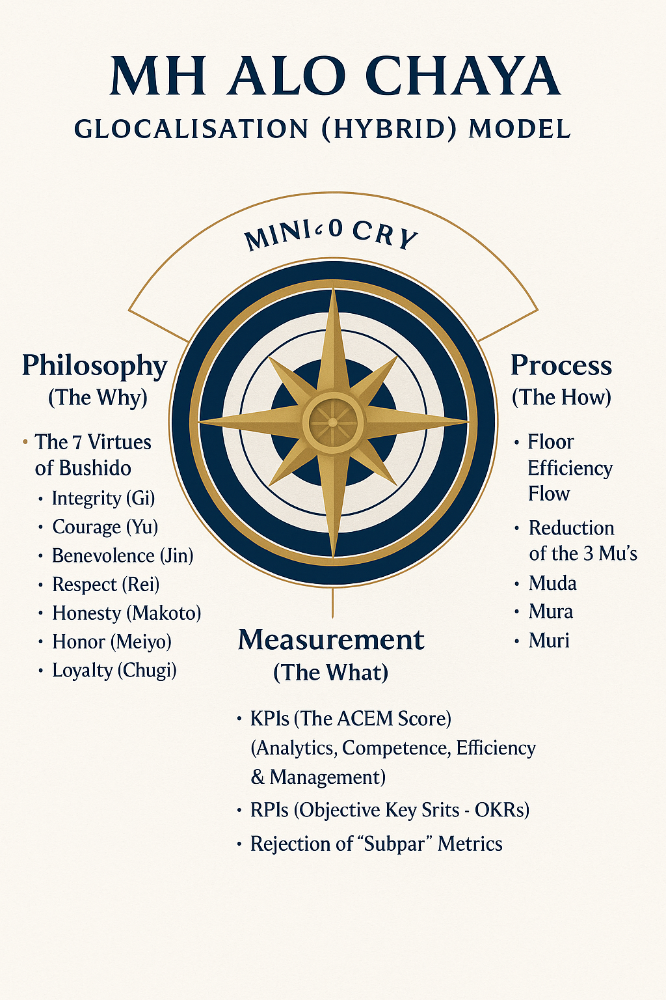

1. What is the ACEM Score?
The **ACEM (Al-Ameen Capability Evolution Model) Score** is the single, objective standard for performance, promotion, and pay. It is the central mechanism that enforces our core doctrines of meritocracy and dignity.

The Purpose: "Rules, Not Tears"
The ACEM Score replaces all forms of subjective, biased, or "un-coachable" management. An individual's success is not determined by a manager's personal opinion, tenure, or linguistic bias.
It is a transparent, mathematical link between a Specialist's proven competence and their compensation, as defined in the **Dignity Wage** and **Step Payment** models.
The Mandate: "ACEM Purity"
The **ACEM Purity Mandate** is non-negotiable. It guarantees that all assessments, whether for hiring or promotion, are 100% relevant to the codified duties of the role.
This doctrine **bans** all irrelevant academic tests (e.g., geometry, algebra) and cultural gatekeeping (e.g., "Bangla Boli") from the assessment process, protecting the Specialist from archaic, unfair barriers.
2. The 4-Step ACEM Process
ACEM is a continuous cycle of improvement, not a one-time review.

1. Audit
We audit the *actual* duties, responsibilities, and value-add of a specific role. This is a practical, on-the-ground analysis, not a theoretical one.
2. Codify
We codify these duties into a clear, non-negotiable job description. These codified metrics become the sole basis for the ACEM Score for that role.
3. Execute
The Specialist executes their duties. Their performance is measured against the objective, codified metrics—nothing else.
4. Maintain
We constantly maintain the system, auditing roles and removing irrelevant metrics to ensure "ACEM Purity" is always upheld as the Guild evolves.
3. The Recruitment & Onboarding Protocol (The Employee Story)
We do not just "hire" people. We begin the Employee Story. Our system is a data-driven model designed for personalization, connecting every stage of the employee lifecycle. This ensures we recruit the right people, grow them as Specialists, and learn from their journey to constantly improve the Guild.
Step 1: Discovery & Application
It starts with our Company Branding and honest Recruitment Discovery. Prospective Specialists apply via our portal, submitting not just a CV, but the raw data for their Employee Story, such as:
- Full CV (Previous Experience)
- Technical & Soft Skill Competencies
- MBA/BBA Course Outlines
- All relevant certificates
Step 2: The ACEM Assessment
All applications are assessed based on the ACEM Purity Mandate. We test only for skills 100% relevant to the codified job role. We ban all irrelevant academic and cultural barriers, ensuring a fair, merit-based selection.
Step 3: The Trainee Specialist
Successful candidates are not "Interns." They are hired as paid Trainee Specialists at a Dignity Wage. They are given a codified role to begin their journey, allowing them to learn and contribute from day one.
Interactive Frameworks
The models that power our HR system. Click any block for granular details and process flow.

ACEM (Al-Ameen Capability Evolution Model) - The Objective Standard

1. Environment Block (Focus: Contextualizing Identity)
ORIENTATION DETAIL: The briefing contrasts our desired Task-Oriented Culture with the local Person-Oriented Culture. We force the employee to consciously choose to shed local cultural habits.
- Hofstede's 6D, Trompenaars' 7D (National), Trompenaars' Corporate Culture Matrix.
- Edward Hall's High/Low Context Theory, Handy's Cultural Types, Deal & Kennedy Culture Types.
- Henrick Dahl's Typology, Edgar Schein's 3 Levels of Organizational Culture, Johnson & Scholes Cultural Web.
- Socioeconomic & Political Context.
2. Individual Block (Focus: Core Personality and Ethical Disposition)
RECRUITMENT DETAIL (Moral Purity Filter): We screen for the 5 Vices (Lethargy, Arrogance, Deceit) using the granular NEO-PI-R facets. High prestige markers trigger scrutiny for Credential-Based Arrogance (Low Modesty A5).
ORIENTATION DETAIL (The Ethical Commitment): Employees affirm the Nicomachean Virtue-Vice Spectrum, making the demonstration of Virtue (The Golden Mean) a contractual obligation, not a preference.
**Philosophy (The Why): The 7 Virtues of Bushido**
- Integrity (Gi)
- Courage (Yu)
- Benevolence (Jin)
- Respect (Rei)
- Honesty (Makoto)
- Honor (Meiyo)
- Loyalty (Chugi)
**Core Personality & Trait Theory**
- Ralph Stogdill (1948): Identified eight traits that differentiate leaders from followers: Intelligence, Alertness, Insight, Responsibility, Initiative, Persistence, Self-confidence, and Sociability.
- Ralph Stogdill (1974): Confirmed a move to a combined situational and trait factor approach, listing: Achievement, Persistence, Insight, Initiative, Self-confidence, Responsibility, Cooperativeness, Tolerance, Influence, and Sociability.
- McCall and Lombardo (1983): Identified four critical success factors: Emotional Stability, Admitting Mistakes, Good Interpersonal Skills, and Intellectual Breadth.
- Kouzes and Posner (1983-1987): Derived ten key follower-identified traits: Honest, Forward-looking, Inspirational, Competent, Fair-minded, Supportive, Broad-minded, Intelligent, Straightforward, and Dependable.
- Kirkpatrick & Locke (1991): Proposed basic leader tools: Drive, Leadership Motivation, Honesty and Integrity, Self-confidence, Cognitive Ability, and Knowledge of the Business.
- Zaccaro, Kemp, and Bader (2004): Proposed combined trait influence: Extraversion, Cognitive abilities, Conscientiousness, Emotional stability, Openness, Agreeableness, Motivation, Social intelligence, Self-monitoring, Emotional intelligence, and Problem-solving.
**Virtue & Character Frameworks**
Seligman's VIA Classification vs. Aristotle's Nicomachean Ethics: The VIA Classification is an empirical framework identifying 24 character strengths grouped under six universal virtues, focused on utilizing individual "signature strengths" for happiness. Aristotle's Ethics is a prescriptive work focused on cultivating virtuous character through *phronesis* (practical wisdom) to find the "golden mean" between deficiency and excess.
VIA Classification of Character Strengths and Virtues (6 Virtues):
- 1. Wisdom and Knowledge: Creativity, Curiosity, Judgment/Critical Thinking, Love of Learning, Perspective/Wisdom.
- 2. Courage: Bravery, Honesty/Integrity, Perseverance/Persistence, Zest/Vitality.
- 3. Humanity: Kindness/Generosity, Love, Social Intelligence.
- 4. Justice: Fairness, Leadership, Teamwork/Citizenship.
- 5. Temperance: Forgiveness/Mercy, Humility/Modesty, Prudence, Self-Regulation/Self-Control.
- 6. Transcendence: Appreciation of Beauty & Excellence, Gratitude, Hope/Optimism, Humor/Playfulness, Spirituality/Purpose.

**NEO-PI-R Personality Mapping**
The Five Domains and 30 Facets:
- Neuroticism (N): Anxiety, Angry Hostility, Depression, Self-Consciousness, Impulsiveness, Vulnerability.
- Extraversion (E): Warmth, Gregariousness, Assertiveness, Activity, Excitement Seeking, Positive Emotions.
- Openness to Experience (O): Fantasy, Aesthetics, Feelings, Actions, Ideas, Values.
- Agreeableness (A): Trust, Straightforwardness, Altruism, Compliance, Modesty, Tender-Mindedness.
- Conscientiousness (C): Competence, Order, Dutifulness, Achievement Striving, Self-Discipline, Deliberation.

DeYoung & Peterson 10 Aspects (The Granular Filter):
- **Openness:** Intellect (Abstract ideas) vs. Openness (Aesthetics/Imagination).
- **Conscientiousness:** Industriousness (Work ethic/Discipline) vs. Orderliness (Neatness/Organization).
- **Extraversion:** Assertiveness (Dominance) vs. Enthusiasm (Sociability/Energy).
- **Agreeableness:** Compassion (Empathy/Kindness) vs. Politeness (Adherence to social norms).
- **Neuroticism:** Withdrawal (Anxiety/Sadness) vs. Volatility (Irritability/Mood swings).
CORE MAPPING (5 Vices to Facets):
- Vice of LETHARGY: Linked to Low **Industriousness** (C-Aspect) and Low **Self-Discipline** (C5).
- Vice of ARROGANCE: Linked to Low **Modesty** (A5) and High **Assertiveness** (E-Aspect).
- Vice of DECEIT: Linked to Low **Dutifulness** (C3) and Low **Straightforwardness** (A2).

Extensions & Governance Models
Advanced frameworks derived from ACEM for diagnosis, cultural enforcement, and objective performance governance.
8-9. Diagnostic Tools: GLSM and The 5 Vices
8. The Glocalization Model & GLSM Flowchart
The **Glocalization Model** is the hybrid framework (Bushido + Flow) that feeds the GLSM diagnostic tool.
- START: Analyze Cultural Context: (Observe) Prevents the academic trap of starting with an opinion.
- STEP 2: Assess Personality (ACEM Individual Block):
(Orient) Identifies the true self (Dark Triad, Conscientiousness). - STEP 3: The Convergence & The Vice:
(Decide) All paths converge to pinpoint the ethical failure (e.g., Vice of Cowardice/Lethargy). This is the **Stem Cause** diagnosis. - FINAL: Adapt Strategy and Framework:
(Act) Decisions result in a **Process Prescription** (e.g., OODA Loop Application) to fix the specific deficiency identified.